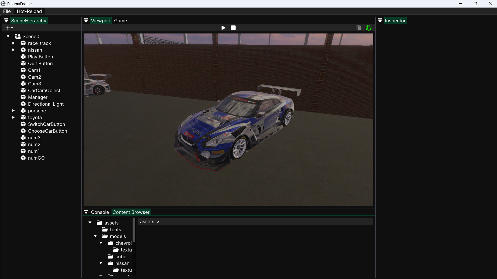
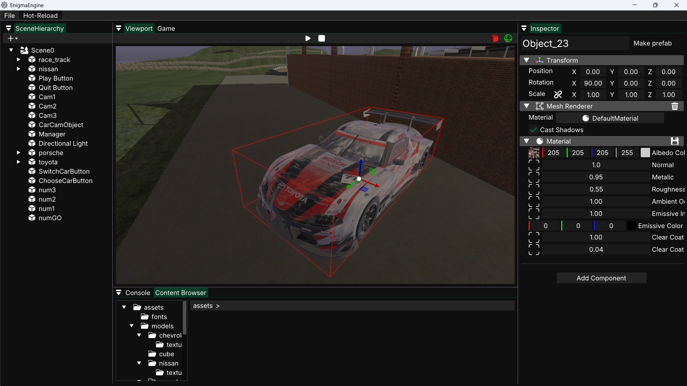

Hiérarchie
Arbre de la scène, création, sélection et suppression d'objets.
ImGui docking
Un moteur ne sert à rien si on ne peut pas construire de scène avec. L'éditeur est un exécutable à part entière, avec les panneaux qu'on attend d'Unity ou d'Unreal. J'y ai ajouté l'undo / redo, les identifiants uniques et la duplication.
Travail d'équipe

Arbre de la scène, création, sélection et suppression d'objets.
Vue d'édition avec caméra libre, gizmos et picking, et vue de la caméra de jeu.
Composants et propriétés générés depuis la réflexion RTTR, y compris pour les scripts.
Navigation dans les assets : modèles, matériaux, prefabs, scènes, sons.
Logs du moteur et retours de compilation des scripts.
Édition des matériaux PBR et de leurs textures, sauvegardés en .mat.

Ctrl + Z / Ctrl + Y
Chaque modification de la scène enregistre une Action qui sait l'annuler : une closure, l'UUID de l'objet concerné et, si besoin, un instantané JSON. Les actions couvrent la création et la suppression d'objets, le parentage, les transforms (position, rotation, échelle) et l'ajout ou la suppression de composants.
L'astuce est dans la symétrie. Pendant un undo, le gestionnaire passe en contexte REDO : l'action inverse, en modifiant la scène, enregistre elle-même son propre inverse… dans la pile de redo. Il n'y a donc pas de code « refaire » à écrire pour chaque opération.
void Shortcut::Undo()
{
if (!undoActions.empty())
{
context = REDO; // the inverse action records itself as a redo
Action action = undoActions.back();
undoActions.pop_back();
action.action();
context = UNDO;
}
}Annuler une suppression recrée l'objet : son adresse mémoire change. Une action ne garde donc jamais de pointeur, mais l'identifiant 128 bits de l'objet, qui survit aussi à la sauvegarde et au hot reload.
Une suppression sérialise l'objet et ses enfants avant de les détruire. L'annuler revient à le désérialiser, en réutilisant le sérialiseur de scène.
Prise en main
| Action | Entrée |
|---|---|
| Caméra libre | Clic gauche maintenu + ZQSD / A E |
| Panoramique | Molette maintenue |
| Gizmo translation / rotation / échelle | W / R / E |
| Sauvegarder / nouvelle scène | Ctrl + S / Ctrl + N |
| Annuler / rétablir | Ctrl + Z / Ctrl + Y |
| Dupliquer | Ctrl + D |
Recul
Les modifications de valeurs de scripts ne sont pas encore annulables, car leurs types vivent dans la DLL rechargeable.
Les piles ne sont pas limitées en taille et une nouvelle action ne vide pas encore la pile de redo. Ce sont les deux prochains correctifs.